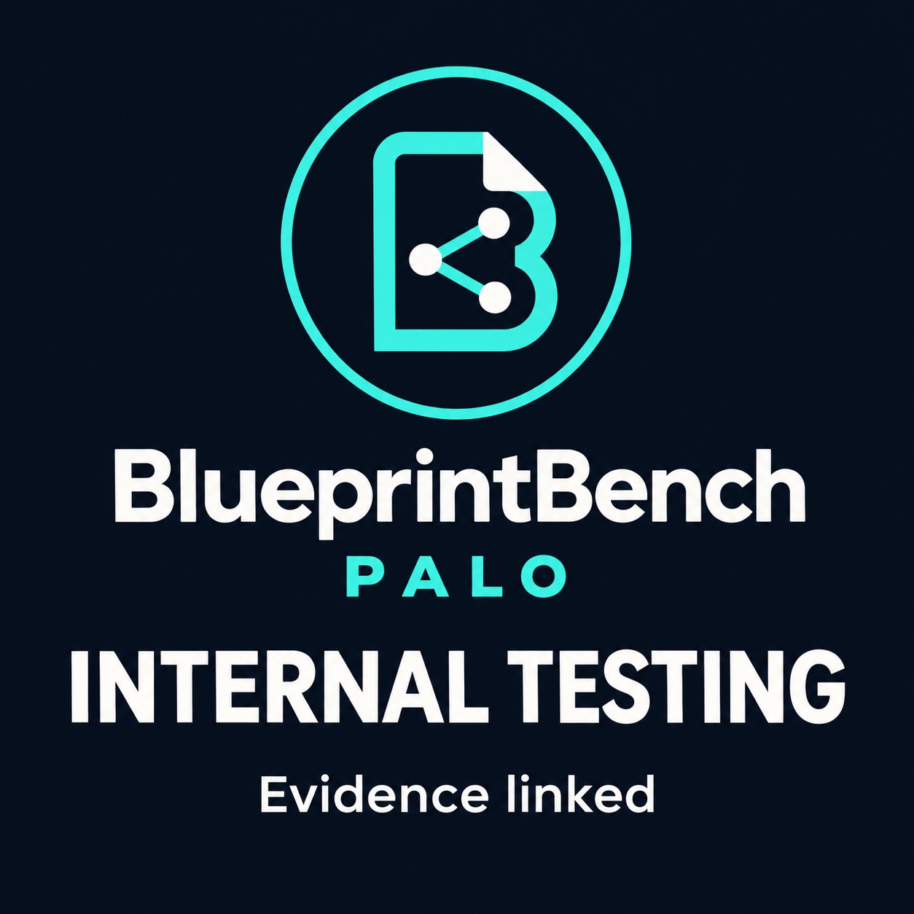

Interpretation
Human-verified source units isolate reasoning from parsing.
Research programme / Research release
Does the meaning survive when AI turns business documents into a development specification? We examine obligations, permissions, ownership and exceptions, alongside the human work needed to correct them.
Document → proposition → reviewed specification
Does “may” remain a permission?
Does an exception survive?
Who checks the interpretation?
Shared model catalogue
This overview and the leaderboard read the same catalogue. Procurement tests and historical adapter diagnostics retain their own tasks, configurations and denominators.
Loading the shared catalogue.
Internal tests / 11 November 2026
Three synthetic procurement cases, three repetitions and two tasks: preserve numbered source rules, then classify seeded statements. Prompts and labels were frozen before execution; extension models were selected after observing the original baseline. This cohort is separate from the historical adapter tests below.
Open the full leaderboard and evidence workspace ↗
Loading recorded internal results.
Bars show matches, disagreements and missing classifications against a fixed set of assistant-draft labels. Costs and median request latency describe the entire two-task cohort and do not change with the filters. These are provider-reported charges, not invoices. High reasoning is not equal compute across providers. The translation task permits close restatement. Review status and evidence paths are shown in the shared leaderboard; newer model drafts may await review.
They exercise provider requests, fixed denominators, known semantic controls and failure accounting. Draft specification exports were replayed for the original three-model baseline only; extension translations remain unreviewed. This small synthetic suite requires a harder independently authored corpus before making comparative quality claims. An HTTP failure is an availability observation, not evidence of a semantic error. One seeded label is contested: increasing an explicit EUR 10 tolerance may contradict the source, although the frozen label was “not established”. Primary counts remain unchanged; the report includes a post-hoc sensitivity check. No PBI score or confidence interval is assigned.
Inspect frozen inputs, request bodies, output text and analysis · Original baseline machine-readable results · Complete current cohort data · Original three-model baseline report
01 / Model evidence explorer
Use properties to narrow the set. Select up to four models to inspect side by side. Records use fixed alphabetical order. Filters and side-by-side inspection compare configurations; no performance ranking is offered.
Charts remain unavailable rather than showing placeholder scores. You can inspect the source JSON directly.
Click a model for its full record. Select up to four to compare.
| Select for comparison | Model | ContextAdvertised | CompletedCalls / 3 assigned | Structural checksPassed / candidates | LatencySuccessful median | Reconciled chargeUSD, recorded attempts |
|---|---|---|---|---|---|---|
| Loading diagnostic records… | ||||||
No model matches this combination. Reset the filters or broaden one property.
Unknown charges are shown separately as unresolved reservations. Provider-reported charges are not invoice-reconciled totals or all-in enterprise costs. Missing outputs do not become zero structural accuracy.
Inspect side by side
Select up to four models from the table or plot.
The full picture travels with the numbers.
Compare provider, reasoning, denominators, charge completeness and observed failure notes. Your selection stays when filters change.
02 / Methodology
The current diagnostics expose pipeline behaviour. The benchmark is being built to evaluate the meaning, review effort and integrity of the resulting business blueprint.
ILLUSTRATIVE CLAUSE / NOT A MEASURED RESULT
“The manager may approve after review.”
“The manager must approve after review.”
A genuine citation can accompany a changed obligation. Schema validity does not establish semantic faithfulness.
Text, tables, formulas and layout.
Ownership, negation and conditions.
Required facts and appropriate abstention.
Entities, attributes and valid relations.
Actors, branches, permissions and exceptions.
Review state and actual permitted effects.
Completion, failure and recovery.
Corrections, missing-fact work and total cost.
Human-verified source units isolate reasoning from parsing.
Original PDF/XLSX files test the whole workflow through reviewed export.
Fault and boundary tests measure system effects separately from model ability.
A comparable result identifies the model revision, provider/runtime, quantisation, reasoning, context, pipeline and adapter versions, corpus, date and resource conditions. The three existing development cases do not establish unseen-case performance. New full-repository jobs have not qualified a new app release.
First study: procurement. Critical rule inversions, required-fact coverage and active human correction time are the initial research focus. The eight dimensions above describe the wider programme. Study design and qualification authority.
PALO Blueprint Index (PBI). Status: proposed; no score has been assigned. BlueprintBench is the evaluation programme. PBI is the proposed future summary of an eligible, versioned evaluation. Its formula, weights and critical-error gates must be preregistered and independently validated; the eight dimensions will remain visible. Read the index proposal.
Research context
These references compare documented task scope and evidence, not model scores. PALO differences are maintainer interpretations, not claims of superiority or exclusive novelty. External suites were not executed for this review. Sources checked 11 November 2026.
Task suites, reproducible harnesses, document evaluation and uncertainty-aware leaderboards provide the methodological foundations.
Preserving obligations, permissions, ownership and exceptions in a business specification. The first proposed study focuses on procurement and human correction effort.
Executable evidence checks and replayable development diagnostics. Zero qualified held-out results. Independent annotation and metric calibration remain open.
Discovery reference: terryyz/llm-benchmark. All 12 directory entries are covered, with eight applied comparators. Dataset libraries, harnesses and benchmarks have different roles. A reference does not imply endorsement or integration.
| Reference | Target and evidence | Difference from PALO | Practice to adopt |
|---|---|---|---|
| HELMEvaluation framework | Broad scenario and metric coverage for foundation models. Public framework, prompts/responses inspection and leaderboards. README reports maintenance mode since June 2026. | PALO proposes a narrower procurement specification-fidelity study. Multi-dimensional evaluation is established prior art. | Retain scenario, adapter, model and metric versions. |
| BIG-benchTask suite | Collaborative tasks probing diverse language-model capabilities. Public tasks, evaluation code and published experiments. Repository archived on 17 April 2026; retained as historical prior art. | PALO targets business-rule preservation in a reviewed specification, rather than broad capability coverage. | Use explicit task definitions and diverse independently selected cases. |
| BigBIODataset library | Harmonised biomedical datasets and task schemas. Dataloaders, provenance, licensing metadata and dataset documentation. Primary source reviewed | A dataset library is a reference for corpus governance, not a competing procurement-specification score. | Document source rights, schema mappings and provenance. |
| BigScience EvaluationEvaluation framework | Task-based language-model evaluation, including translation and question answering. Code, task abstractions and evaluation instructions. README retains 2021 milestones; no current deployment qualification inferred. | PALO adds a scoped evidence contract for annotated business propositions; it has not demonstrated broader capability coverage. | Keep task-specific evaluation separate from model execution. |
| LM Evaluation HarnessEvaluation framework | Configurable execution of academic language-model tasks across backends. Task configurations, model adapters, metrics and sample logging. Primary source reviewed | This is reusable execution infrastructure. PALO supplies a proposed domain-specific task and adjudication contract; no integration is claimed. | Reuse configuration discipline and record prompt, backend and generation settings. |
| Scholar EvalsUnverified directory entry | Scope could not be verified from the referenced repository. The referenced repository returned HTTP 404 during this review. Unavailable at the referenced URL; reason unknown. | No capability comparison or judgement of benchmark quality is made from an unavailable source. | Preserve the discovery reference and mark unknown evidence explicitly. |
| BigCode Evaluation HarnessCoding evaluation framework | Code generation and related coding tasks, including unit-test-based evaluation. Task implementations, generation/evaluation tooling and container instructions. Primary source reviewed | Correct code against supplied tests does not establish that the originating business requirement was interpreted faithfully. | Keep code-test outcomes separate from source-rule fidelity. |
| Chatbot Arena / ArenaPreference evaluation platform | Model comparison with uncertainty-aware score and rank presentation. Published ranking methodology and confidence/rank intervals. Current methodology checked; directory points to historical FastChat infrastructure. | PALO proposes source-based adjudication of obligations and exceptions; preference and semantic fidelity answer different questions. | Show uncertainty and avoid treating a small numerical ordering as a stable ranking. |
| GLUELanguage-understanding suite | General natural-language understanding across multiple tasks. Task suite, analysis platform and published methodology. The directory links jiant, an implementation toolkit whose README says it is no longer actively maintained. | PALO examines source-to-specification transformations and the correction burden within a business domain. | Use task-specific gold and publish per-task results. |
| SuperGLUELanguage-understanding suite | More challenging general language-understanding tasks following GLUE. Benchmark tasks, evaluation methodology and analysis resources. Distinguish the benchmark from the jiant implementation linked by the directory. | PALO is narrower and currently unqualified; neither general NLU performance nor PALO diagnostics imply success on the other. | Define acceptance and task difficulty before comparing systems. |
| CLUELanguage-understanding suite | Chinese-language understanding through representative classification and reading tasks. Datasets, baselines, task metrics and leaderboards. Primary source reviewed | PALO has not qualified multilingual specification fidelity. Country of model origin is not a language-quality measurement. | Treat language and localisation as explicit evaluation conditions. |
| CodeXGLUECode-intelligence suite | Code understanding and generation, including code/text transformations. Task datasets, baselines and evaluation resources. Primary source reviewed | PALO proposes checking the business meaning before code is produced; code/text overlap is acknowledged. | Separate transformation types and use outcome-appropriate metrics. |
| Vals AIApplied evaluation platform | Industry-oriented tasks and model comparisons across professional domains. Published benchmark pages and methodologies; some benchmarks are proprietary. Primary source reviewed | Enterprise evaluation is already established. PALO proposes a specific document-to-specification fidelity study, without claiming broader coverage or superior validation. | Use realistic tasks and make public/private evidence boundaries explicit. |
| Artificial AnalysisEvaluation platform | Quality, intelligence, performance and price of models, endpoints and systems. Published measurement definitions and comparative results. Primary source reviewed | PALO records configuration-specific evidence and proposes workflow correction effort; current cost records are not full enterprise cost measurements. | Distinguish model, serving endpoint and complete system. |
| OfficeQADocument-reasoning benchmark | Complex questions over real-world financial documents. Evaluation code and corpus tooling; source documents, parsed data and gated answer sets are documented. Primary source reviewed | A close comparator. PALO proposes evaluating the resulting specification and altered rules, rather than only answers to questions. | Separate parsing, retrieval and reasoning; keep unseen document families. |
| DABstepData-agent benchmark | Multi-step business data analysis with factoid answers. Tasks, answer-format requirements and automated answer checks. Primary source reviewed | PALO propositions can admit multiple legitimate formulations and require semantic adjudication; answer normalisation alone is insufficient. | Use deterministic checks where valid, without confusing formatting with correctness. |
| OmniDocBenchDocument-parsing benchmark | Document parsing, including text, tables, formulas and layout. Annotated document data and evaluation tooling. Primary source reviewed | Parsing is an upstream component; PALO proposes checking whether extracted content retains its business meaning in a specification. | Measure extraction independently from interpretation. |
| SWE-bench VerifiedSoftware-agent benchmark | Resolution of repository issues using a human-validated task subset. Task definitions, evaluation resources and published agent results. Primary source reviewed | PALO focuses on interpreting the source requirement before implementation; passing software tests addresses a different evaluation stage. | Freeze the harness and distinguish model comparisons from whole-agent comparisons. |
| FACTS GroundingGrounded-generation benchmark | Factual grounding of generated responses in supplied documents. Published benchmark and multi-judge evaluation methodology. Primary source reviewed | A close semantic comparator. PALO proposes domain-specific critical-rule inversions and human repair effort; that additional value still needs validation. | Calibrate semantic judging against independent reference decisions. |
| Andon Labs Blueprint-Bench 2Spatial-reasoning benchmark | Reconstruction of apartment floor plans from photographs. Published task description, connectivity metric and leaderboard. Primary source reviewed | Distinct project and meaning of blueprint: spatial floor plans versus business development specifications. No affiliation or shared score. | Disambiguate the name and compare only commensurate tasks. |
Read the reference comparison / Download CSV / Inspect dated source records / Earlier methodological review
03 / New reference cases
Six source families were considered for feasibility. They are not qualified datasets or an independent held-out set; some acquisition attempts failed. Acquisition, reuse rights, family independence, scale qualification and human reference annotation are separate gates.
Repository scale. The planned scale stratum uses naturally coherent repositories above 100 MB. No new candidate is yet claimed to meet that threshold. Pages, cells, formulas and dependency complexity also matter.
Reference annotation. Annotators must not see model answers first. Related editions and templates remain in the same split. Held out from PALO development does not mean proven absent from model training.
04 / Open methods and artifacts
Evaluator 0.2 is retained for audit reproducibility. A confirmed non-claim exclusion flaw invalidates its use for qualification. The scoring repair is being developed separately from this historical archive; independent review and measurement validation remain open.
The expanded comparison covers 20 references, including evaluation frameworks, datasets, task suites and applied platforms. Earlier research also covers process modelling, spreadsheet tasks and agent security. Sources and PALO differences are linked in the reference section.
Public methods and development evidence are shared. No externally custodied held-out answer set exists yet. Independent human annotation and qualified results are still to come.
05 / Join the Human Agency
If you understand how a business process works, help us define the correct interpretation, examine the user experience or reproduce the evidence.
Identify source-backed entities, rules and exceptions before seeing model answers. Document and adjudicate disagreements.
Try a supervised review task. Help measure confusion, corrections and the effort of adding missing facts.
Run the toolkit and challenge reproducibility, failure accounting and provider compatibility.
Suggest a public or rights-cleared document family. Begin with a link and a description.
Indicative starting commitment: a 30-minute orientation and an optional 60–90-minute annotation session. These are planning estimates; the scope is agreed before you begin. There is no automatic enrolment or guaranteed selection. Public attribution requires a separate agreement.
Your first contribution
A short email starts the conversation. Share your role, domain and availability.
Open email to volunteerThis page does not submit or store your entries. Your mail app opens a draft to info@paloframework.org; you decide whether to send it.
Do not attach company documents, personal datasets or secrets. Document scope and reuse permission will be discussed separately.
PALO maintains both Workbench and this benchmark, a declared conflict of interest. External custodians, independent annotators and competing implementations are invited. PALO BlueprintBench is unrelated to Andon Labs’ spatial Blueprint-Bench.
Self-reported, maintainer-reproduced and independently reproduced results are distinct. GLM, Gemini and local-model design reviews are advisory.
This pilot does not certify Workbench or imply production enforcement by PALO-AI. Read the Workbench release status.
The 15-slide presentation explains the workflow, the 18-model internal cohort and the next validation steps. It includes real application and leaderboard captures.
View the presentation · Download the logo and testing badge · Badge usage and evidence requirements
The badge identifies internal testing. It conveys no pass result, endorsement, independent certification or PALO Blueprint Index. Every use must link to the exact configuration and dated evidence.
